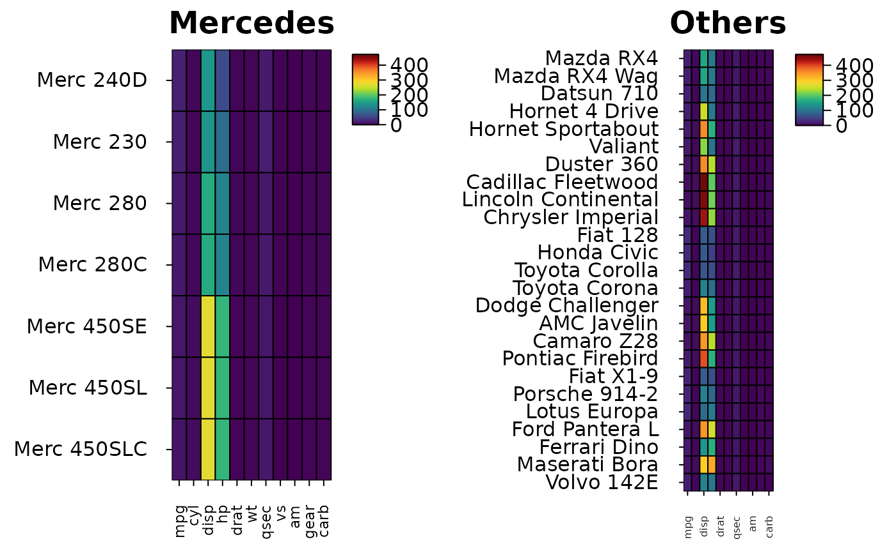

Arrange heatmaps side by side on shared colour and size scales
Source:R/heat_map_arrange.R
heat_map_arrange.Rdheat_map_arrange() redraws several heatmaps - returned by
heat_map, heat_map_dot,
heat_map_cor or heat_map_align - in one layout,
with one set of colour limits (and cell size limits) across them all, so
that the same colour means the same value in every panel and panels can
be compared by eye: e.g. a heatmap of each condition, or of each sample,
drawn separately. Each heatmap keeps its other settings, and its
dendrograms and clusters are reused rather than computed again.
Usage
heat_map_arrange(
...,
layout = NULL,
share = c("colour", "size"),
popup = TRUE,
popup_size = NULL
)Arguments
- ...
heatmaps (objects of class
heat_map), or a list of them.- layout
the layout of the panels, as in
heat_map_custom:c(nrow, ncol)or a matrix. By default the heatmaps are drawn side by side (up to three) or in a grid.what the heatmaps share:
"colour"(the colour limits) and"size"(the limits of cell sizes, e.g. of dot plots), both by default, or"none".- popup, popup_size
whether to open a new graphics device (in interactive sessions) and its size in inches, by default 6 inches wide and 5 tall for each panel (see
heat_map_custom).
Details
The shared colour limits run from the lowest to the highest limit of the
heatmaps, centred on the value they were centred on
(cell_col_scale_center) when they all share one. Heatmaps with
blocks of columns on their own colour scales (heat_map_align())
share the limits of the blocks of the same name. Heatmaps with stepped
colour scales (cell_col_scale_breaks) keep their breaks.
Examples
# \donttest{
# Two groups of cars on one colour scale
grDevices::pdf(NULL)
merc <- heat_map(mtcars[grepl("Merc", rownames(mtcars)), ], popup = FALSE,
title = "Mercedes")
other <- heat_map(mtcars[!grepl("Merc", rownames(mtcars)), ], popup = FALSE,
title = "Others")
grDevices::dev.off()
#> agg_record_18fa1fcad02a
#> 2
heat_map_arrange(merc, other, popup = FALSE)

# }